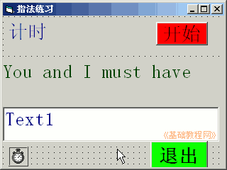
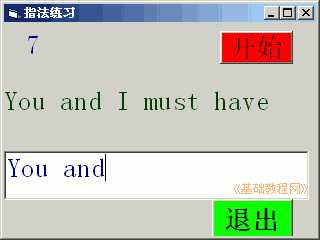

2011-2012 第一学期九年级 VB 教学课程设计
作者：TeliuTe 来源：基础教程网
九、学会命令按钮 返回目录 下一课
学习目标：学会使用命令按钮，退出代码；
注意事项：代码较多，一个一个完成；
1、绘制控件
1）打开一个标准EXE，绘制两个标签，一个文本框，
Label1的Caption属性改为“计时：”，另一个标签改为“You and I must have”
2）设置好控件的字体和颜色；

3）进入代码窗口，点击对象下拉列表，依次选择“通用、Command1、Command2、Timer1”，在出来的代码段中分别输入；
'通用
dim k as integer
'Command1
Timer1.Enabled = True
Text1.SetFocus
'Command2
End
'timer1
k=k+1
label1.caption=str(k)
'Command3-停止 (选做)
timer1.enabled=false
4）保存为“第九课”，点菜单“运行－启动”，在文本框中输入内容；

板书设计：第9课 学会命令按钮
1.窗体，2个标签，1个文本框，1个定时器(flase，1000)
2.再画2个按钮，立体的小方块（灰色）
3.修改 caption，一个“开始”，另一个“退出”
4.进入代码窗口，输入代码
课后记 2011-10-21 13:31：
按钮设计两个，代码不会很多
是继续上一节的还是重新做？重新做好了
--
在原来基础上再画两个命令按钮，地方不够了
把窗体拉高一些，讲解的时候提一下
--
两个按钮，把command单词读一下
原来的as 读错了，学生下面读正确的让我听了下
--
还是要求带笔记本，把代码抄一下
另3个班到下午上了，不知开不开会
--
出错误少些了，不会的也不怎么吵了，吵了就挨骂
感觉这个班有些浮躁，也不用太深入
--
其他做的还不错，有些把停止的代码也做出来了
讲解的时候，一边讲一边提问，答不上来就自己讲出来
本节学习了命令按钮的基础知识，如果你成功地完成了练习，请继续学习下一课内容；
返回目录 下一课
本教程由86团学校TeliuTe制作|著作权所有
基础教程网：http://teliute.org/
美丽的校园……
转载和引用本站内容，请保留版权信息和本站链接。